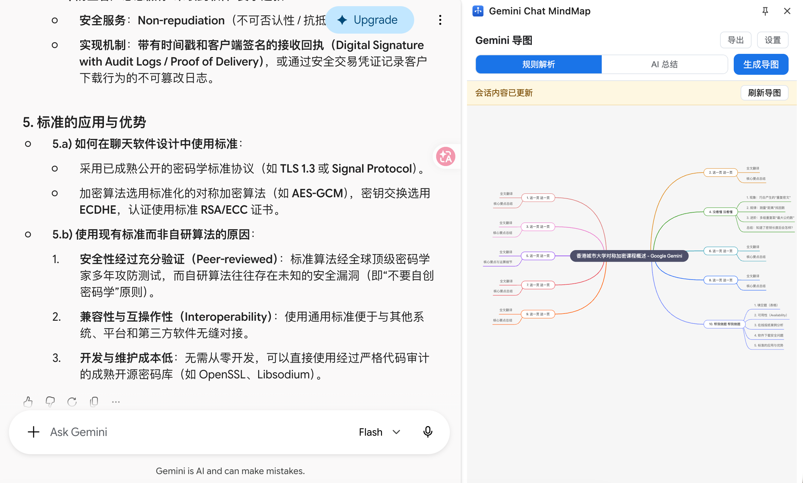

把网页版 Gemini 的长对话，一键变成可双向跳转的思维导图
规则解析 · AI 总结（DeepSeek）· 双向定位 · PDF / XMind 导出
Gemini 会话动辄几十轮，想找回某段讨论只能在页面里反复滚动查找，效率极低。
线性聊天流无法呈现主题结构与逻辑脉络，复习、复盘时缺少全局视角。
对话内容锁在网页里，无法方便地导出为文档或脑图，进入个人知识库。
按对话轮次即时生成导图，零成本；长回答按标题/段落自动切分子分支。
调用 DeepSeek（chat / reasoner 可选）按主题域聚合提炼大纲，带来源的节点可跳回原文。
点导图节点 → 页面滚动定位并闪烁；悬停原文点「导图」→ 侧边栏展开路径并高亮节点。
导出 PDF（整页等比）与 XMind 文件，可直接进入 XMind 继续编辑。

左侧：Gemini 会话页（悬停消息出现「导图」按钮） 右侧：侧边栏思维导图（节点可点击跳回原文）
注入 gemini.google.com
DOM 解析 · 定位闪烁
悬停按钮 · 变更检测
侧边栏开关行为
原文→导图请求中转
（storage.session 暂存）
mind-elixir 渲染导图
规则/AI 双模式
双向跳转 · PDF/XMind 导出
零构建方案：原生 JS + vendored 库（mind-elixir / jsPDF / JSZip），无打包工具，维护成本最低
data-nodeid → payload Map 查到消息 indexGMM_LOCATE → 页面按 index 重查元素scrollIntoView 居中 + CSS 闪烁高亮pendingHighlight 并自动打开侧边栏锚点用「会话内序号」而非 DOM 引用：定位时实时重查，天然容忍 Gemini 的重渲染
轮次分组 + 【第n轮】标注，单条 2500 字 / 总量 45k 字截断
要求按主题域聚合、2~4 层结构、ref 标注来源轮次、严格 JSON
deepseek-chat（JSON 模式）或 deepseek-reasoner（更高质量）
剥离围栏宽松解析 → 校验层级/字数 → ref 轮次号映射回消息 index
mind-elixir exportPng() 渲染整图 → jsPDF 按导图实际宽高建同尺寸页面 → 直接下载，无裁剪无缩放。
导图树转 XMind 2020+ 的 content.json（topic→title、children→attached）→ JSZip 打包 .xmind → XMind 打开可继续编辑。
重载后旧 content script 上下文死亡，通信必挂。
解：通信失败时用 chrome.scripting 自动重注入 + 旧脚本清理注册表。
mind-elixir IIFE 全局变量是模块对象而非类。
解：MindElixir.default || MindElixir 兼容取值。
抓取文本混入 "You said" 等屏幕阅读器前缀。
解：文本提取后正则剥离已知前缀。
树构建抽为纯函数模块 treeBuilder.js：轮次分组、50 轮截断、ref 映射、AI JSON 容错、深度防护等 34 项断言全过。
覆盖：规则/AI 生成、双向跳转、会话更新提示、长会话截断、空会话、无效 Key、断网等边界场景。
支持从侧边栏会话列表选择历史对话生成导图。
抽象解析层，适配 ChatGPT / Claude 等对话站点。
Markdown 大纲、OPML、PNG 长图等格式。
Gemini Chat MindMap · 谢谢观看